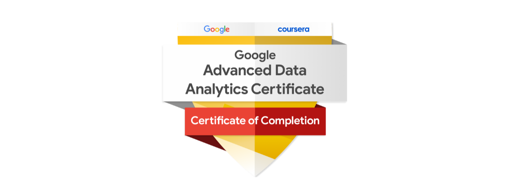

ADAAB!
Welcome to my website! I am John (Ailia) Ramal, a dedicated student passionate about data science and analytics.
Currently pursuing my studies in Economics with a focus on Data Analytics at S3H-NUST, I actively seek opportunities to apply my skills in real-world projects.
From developing high-accuracy predictive models to building data-driven dashboards, I thrive on solving complex problems using data-driven insights.
Explore my projects and journey as I continue to expand my expertise in data science and strive towards becoming a proficient data scientist.

In this HR data analysis project, I built a predictive model with 98.603% accuracy to forecast employee retention. By analyzing HR data and inspecting feature importance,
I quantified the effects of various factors on turnover rates. My findings suggest that reducing average monthly hours, improving work satisfaction, and ensuring fair project assignments can significantly lower turnover.
This project highlights my skills in using data for real-world solutions.

This ongoing project investigates the data job market in Pakistan, focusing on skill requirements, tools, trends, and regional differences. It aims to compare Pakistan's data job market with that of other competing countries to provide a comprehensive view of industry demands and opportunities.
While the project is still in progress and currently lacks sufficient data for in-depth salary analysis, it seeks to offer valuable insights into the evolving landscape of data jobs. The analysis will continue to develop as more data becomes available, with the ultimate goal of delivering actionable insights for job seekers and industry stakeholders.
In the Jazz Digital Squad Hackathon, I led Team Karakorum Analytics Vanguard to develop a standout Tableau dashboard suite focused on manager performance analysis.
Our interactive dashboards featured detailed visualizations such as geographic sales and profit distributions, key performance indicators, trend analysis charts, and customer retention metrics.
These tools provided stakeholders with actionable insights to optimize manager performance across various dimensions. As a top-performing team, we showcased our technical prowess and collaborative skills, highlighting our ability to deliver innovative solutions in competitive settings.
I conducted two comprehensive data analysis projects using pandas and seaborn. The first project involved exploratory data analysis on online retail data, where I identified sales trends over time and across countries,
ultimately recommending the expansion of foreign operations and the provision of early-year sales incentives to boost revenue. The second project involved simulating Twitter-like data to analyze the distribution of likes across different categories,
genders, and image presence. My analysis led to actionable insights, such as collaborating with tech and beauty influencers and using images to engage the female audience. These projects, completed as part of my Coursera Project Network, demonstrated my ability to derive meaningful insights and recommendations from data.
For one of my DataCamp projects, I conducted an exploratory analysis of entertainment data to uncover genre distribution patterns and identified clusters of non-typical genres such as children's movies and documentaries. Additionally, I explored the mental health challenges faced by international students,
leveraging PostgreSQL to analyze data from a Japanese university study. The analysis revealed that international students exhibit a higher risk of mental health difficulties, with social connectedness and acculturative stress being significant predictors of depression. This project highlighted the importance of advanced data analysis techniques and visualizations in understanding complex social issues
For my upcoming project, I will be analyzing the Nashville Housing Data using PostgreSQL. This project will involve performing exploratory data analysis (EDA) and advanced data cleaning to prepare the data for comprehensive analysis and visualization.
The goal is to uncover valuable insights and trends in the housing market.